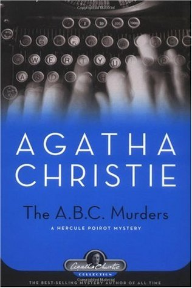

<!doctype html>
<html>
    <title>Mystry</title>
    <link rel="stylesheet" href="main.css">
</html>
<body>
    <nav>
        <label class="logo">Mystry</label>
        <ul class="nav-links">
            <li><a href="index.html">Home</a></li>
            <li><a href="book.html">Adventure</a></li>
            <li><a href="book1.html">Science Fiction</a></li>
            <li><a href="book2.html">Thriller</a></li>
            <li><a href="book3.html">Horror</a></li>
            <li><a href="book4.html">Humour</a></li>
        </ul>
    </nav>
    <table cellspacing="20px">
        <tr>
            <td>
                <details>
                    <summary>Introduction</summary>
                       <p>
                        Far beneath the surface of the earth, upon the shores of the Starless Sea, there is a labyrinthine collection of tunnels and rooms filled with stories. The entryways that lead to this sanctuary are often hidden, sometimes on forest floors, sometimes in private homes, sometimes in plain sight. But those who seek will find. Their doors have been waiting for them.

Zachary Ezra Rawlins is searching for his door, though he does not know it. He follows a silent siren song, an inexplicable knowledge that he is meant for another place. When he discovers a mysterious book in the stacks of his campus library he begins to read, entranced by tales of lovelorn prisoners, lost cities, and nameless acolytes. Suddenly a turn of the page brings Zachary to a story from his own childhood impossibly written in this book that is older than he is.
</p>     
                    
                </details></td>
            
            <td class="a">
                <h3>The Starless Sea</h3>
                <p>Erin Morgenstern </p>
                <a class="btn1" href="order.html">Purchase</a>
            </td>
        </tr>
        <tr>
            <td>
                <details>
                    <summary>Introduction</summary>
                      <p>When Alice Asher is murdered in Andover, Hercule Poirot is already on to the clues. Alphabetically speaking, it's one down, twenty-five to go.

                        There's a serial killer on the loose. His macabre calling card is to leave the ABC Railway guide beside each victim's body. But if A is for Alice Asher, bludgeoned to death in Andover; and B is for Betty Bernard, strangled with her belt on the beach at Bexhill; then who will Victim C be?
                    </p>     
                    
                </details></td>
            <td class="a">
                <h3>The A.B.C. Murders</h3>
                <p>Agatha Christie</p>
                <a class="btn1" href="order.html">Purchase</a>
            </td>
        </tr>

        <tr>
            <td><details>
                <summary>Introduction</summary>
                  <p>IRachel catches the same commuter train every morning. She knows it will wait at the same signal each time, overlooking a row of back gardens. She’s even started to feel like she knows the people who live in one of the houses. “Jess and Jason,” she calls them. Their life—as she sees it—is perfect. If only Rachel could be that happy. And then she sees something shocking. It’s only a minute until the train moves on, but it’s enough. Now everything’s changed. Now Rachel has a chance to become a part of the lives she’s only watched from afar. Now they’ll see; she’s much more than just the girl on the train...

                  </p>
            </details></td>
            <td class="a">
                <h3>The Girl on the Train</h3>
                <p>Paula Hawkins</p>
                <a class="btn1" href="order.html">Purchase</a>
            </td>
        </tr>

        <tr>
            <td>
                <details>
                    <summary>Introduction</summary>
                      <p>First, there were ten—a curious assortment of strangers summoned as weekend guests to a little private island off the coast of Devon. Their host, an eccentric millionaire unknown to all of them, is nowhere to be found. All that the guests have in common is a wicked past they're unwilling to reveal—and a secret that will seal their fate. For each has been marked for murder. A famous nursery rhyme is framed and hung in every room of the mansion:

                        "Ten little boys went out to dine; One choked his little self and then there were nine. Nine little boys sat up very late; One overslept himself and then there were eight. Eight little boys traveling in Devon; One said he'd stay there then there were seven. Seven little boys chopping up sticks; One chopped himself in half and then there were six. Six little boys playing with a hive; A bumblebee stung one and then there were five. Five little boys going in for law; One got in Chancery and then there were four. Four little boys going out to sea; A red herring swallowed one and then there were three. Three little boys walking in the zoo; A big bear hugged one and then there were two. Two little boys sitting in the sun; One got frizzled up and then there was one. One little boy left all alone; He went out and hanged himself and then there were none."
                      </p>
</details></td>
            <td class="a">
                <h3>And Then There Were None</h3>
                <p>Agatha Christie</p>
                <a class="btn1" href="order.html">Purchase</a>
                
            </td>
        </tr>
    </table>
</body>